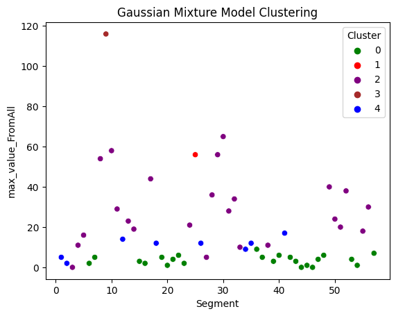

Clustering
In this study, two non-contact velocity meters (Doppler LiDAR sensors) are mounted onboard a hi-rail vehicle and measured and stored the lateral vibration of both rails (right and left). The test is about 3.2 miles.
Several steps had been taken which will non be discusseed here. In nutshel,
Data cleaning
Scaling the velocities
High-pass filtering
Solve for homoscedasticity
And finally segmenting since we want to look at section of track not a single data point

from google.colab import drive
drive.mount('/content/drive')import pandas as pd
import numpy as np
from sklearn import preprocessing
import matplotlib.pyplot as plt
import seaborn as sns
%matplotlib inline
from sklearn import preprocessing
from sklearn.mixture import GaussianMixture
from sklearn.linear_model import LogisticRegression
from sklearn.model_selection import train_test_split
from sklearn.preprocessing import MinMaxScaler
from sklearn.preprocessing import StandardScaler
from sklearn.metrics import classification_report
from sklearn.metrics import precision_recall_fscore_support as scoredef interactive_plot_scatter(df, x_axis, y_axis):
import plotly.express as px
fig = px.scatter(df, x_axis, y_axis)
return fig.show()
def interactive_plot_line(df, x_axis, y_axis):
import plotly.express as px
fig = px.line(df, x_axis, y_axis)
return fig.show()
def tach_cleaning(df):
tach = np.zeros(df['Tach'].shape[0])
for i in range(1, df['Tach'].shape[0]):
if df.iloc[i]['Tach'] > 2.2:
tach[i] = 5
df['Tach_p'] = tach
return df
def position_string(df: dict) -> str:
df['Pos'] = 0.000000
pos = df['Pos']
c = 0;
delta = float((1/36) * 7.25 * np.pi / 12);
for i in range(1, pos.shape[0]):
if (np.abs(df.iloc[i]['Tach']-df.iloc[i-1]['Tach'])>1):
c = c + 1
pos[i] = delta * c
return pos
def remove_Keyence_dropout(df):
df = df[df['left_disp']<1.15]
df = df[df['right_disp']<0.925]
return df
def remove_outliers(df):
Q1 = np.percentile(df['right_disp'], 25,
interpolation = 'midpoint')
Q3 = np.percentile(df['right_disp'], 75,
interpolation = 'midpoint')
IQR = Q3 - Q1
up = Q3+1.5*IQR
low = Q1-1.5*IQR
df = df[df['right_disp']<up]
df = df[df['right_disp']>low]
Q1 = np.percentile(df['left_disp'], 25,
interpolation = 'midpoint')
Q3 = np.percentile(df['left_disp'], 75,
interpolation = 'midpoint')
IQR = Q3 - Q1
up = Q3+1.5*IQR
low = Q1-1.5*IQR
df = df[df['left_disp']<up]
df = df[df['left_disp']>low]
return dfimport matplotlib.pyplot as plt
import numpy as np
def custom_multiplot(x, y_sets, title=None, xlabel=None, ylabel=None, legend_labels=None, legend_loc='best', grid=True, save_as=None, colors=None, title_size=16, label_font_size=12, tick_font_size=10, figsize=(10, 6), xlim=None, ylim=None, xlog=False, ylog=False, scatter=False):
"""
Create a customized plot with multiple y-axis parameters using Matplotlib.
Parameters:
- x: x-axis data (list or NumPy array)
- y_sets: List of y-axis data sets (list of lists or NumPy arrays)
- title: Plot title (string, optional)
- xlabel: Label for the x-axis (string, optional)
- ylabel: Label for the y-axis (string, optional)
- legend_labels: Labels for the legend (list of strings, optional)
- legend_loc: Location of the legend ('best', 'upper left', 'upper right', 'lower left', 'lower right', etc.)
- grid: Display grid lines (boolean, optional)
- save_as: File name to save the plot as an image (string, optional)
- colors: List of line colors (list of strings or tuples, optional)
- title_size: Font size for the plot title (int, optional)
- label_font_size: Font size for axis labels and legend (int, optional)
- tick_font_size: Font size for tick labels (int, optional)
- figsize: Figure size as a tuple (width, height) (optional)
- xlim: Tuple specifying the x-axis limits (e.g., (xmin, xmax)) (optional)
- ylim: Tuple specifying the y-axis limits (e.g., (ymin, ymax)) (optional)
- xlog: Enable logarithmic scaling for the x-axis (boolean, optional)
- ylog: Enable logarithmic scaling for the y-axis (boolean, optional)
Returns:
- None
"""
plt.figure(figsize=figsize) # Adjust the figure size
if colors is None:
colors = ['blue', 'red', 'green', 'purple', 'orange', 'cyan', 'magenta']
for i, y in enumerate(y_sets):
color = colors[i % len(colors)]
label = legend_labels[i] if legend_labels and i < len(legend_labels) else None
if scatter:
plt.scatter(x, y, label=label, color=color, s=30)
elif xlog:
plt.semilogx(x, y, label=label, color=color, linewidth=2)
elif ylog:
plt.semilogy(x, y, label=label, color=color, linewidth=2)
else:
plt.plot(x, y, label=label, color=color, linewidth=2)
if legend_labels:
plt.legend(legend_labels, loc=legend_loc, fontsize=label_font_size)
if title:
plt.title(title, fontsize=title_size)
if xlabel:
plt.xlabel(xlabel, fontsize=label_font_size)
if ylabel:
plt.ylabel(ylabel, fontsize=label_font_size)
if grid:
plt.grid(True)
if xlim:
plt.xlim(xlim)
if ylim:
plt.ylim(ylim)
plt.xticks(fontsize=tick_font_size)
plt.yticks(fontsize=tick_font_size)
if xlog:
plt.xscale('log')
if ylog:
plt.yscale('log')
ax = plt.gca()
#ax.xaxis.set_major_locator(MaxNLocator(integer=True))
#ax.yaxis.set_major_locator(MaxNLocator(integer=True))
if save_as:
plt.savefig(save_as, dpi=300, bbox_inches='tight')
plt.show()
#----------------------------------------------------------------------------------------------------------------------------------------------------------------In the dataset we have two parameters. Fist one +2 sigma right/left velocity within the entire data and the other one is +2 sigma right/left velocity within each segment.
df = pd.read_csv('/content/drive/MyDrive/ML/SLineNS2.csv')In here, we will only keep the maximum value of right or left rail for each parameter. The reason is that in this case if any of the left or right rail is loose it will mark it as loose.
def max_FromAll(row):
return max(row['Right_Plus_2Sigma_FromAll_Lateral_Weighted'], row['Left_Plus_2Sigma_FromAll_Lateral_Weighted'])
def max_FromSegment(row):
return max(row['Right_Plus_2Sigma_FromSegment_Lateral_Weighted'], row['Left_Plus_2Sigma_FromSegment_Lateral_Weighted'])
# Apply the function to create a new column 'max_value'
df['max_value_FromAll'] = df.apply(max_FromAll, axis=1)
df['max_value_FromSegment'] = df.apply(max_FromSegment, axis=1)
X = df[['max_value_FromAll', 'max_value_FromSegment']]
n_clusters = 4 # we need 5 clusters based on elbow method
gmm = GaussianMixture(n_components=5, random_state=42)
gmm.fit(X)df['Cluster'] = gmm.predict(X)sns.scatterplot(x='max_value_FromAll', y='max_value_FromSegment', hue='Cluster', data=df, palette=['green', 'red', 'purple', 'brown', 'blue'])
plt.title('Gaussian Mixture Model Clustering')
plt.show()
sns.scatterplot(x='Segment', y='max_value_FromAll', hue='Cluster', data=df, palette=['green', 'red', 'purple', 'brown', 'blue'])
plt.title('Gaussian Mixture Model Clustering')
plt.show()
Interpreting the results
After inspecting all the clusters in Google map, Red cluster (only segment) turned out to be a railroad switch